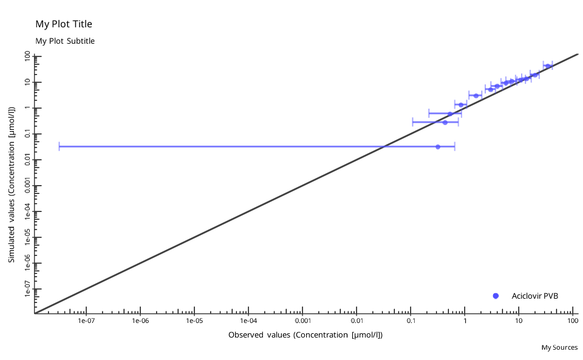

Observed versus predicted/simulated scatter plot
Source:R/plot-observed-vs-simulated.R
plotObservedVsSimulated.RdObserved versus predicted/simulated scatter plot
Arguments
- dataCombined
A single instance of
DataCombinedclass.- defaultPlotConfiguration
A
DefaultPlotConfigurationobject, which is anR6class object that defines plot properties.- foldDistance
A vector for plotting lines at required fold distances around the identity line (
x=y). Set to NULL (default) to only draw identity line. Set to FALSE to not draw any lines. The vector can include only fold distance values>1. Anx-fold distance is defined as all simulated values within the range betweenx-fold (depicted by the upper fold range line) and1/x-fold (depicted by the lower fold range line) of observed values. The identity line can be interpreted as the1-fold range.
See also
Other plotting:
DefaultPlotConfiguration,
plotIndividualTimeProfile(),
plotPopulationTimeProfile(),
plotResidualsVsSimulated(),
plotResidualsVsTime()
Examples
# simulated data
simFilePath <- system.file("extdata", "Aciclovir.pkml", package = "ospsuite")
sim <- loadSimulation(simFilePath)
simResults <- runSimulations(sim)[[1]]
outputPath <- "Organism|PeripheralVenousBlood|Aciclovir|Plasma (Peripheral Venous Blood)"
# observed data
obsData <- lapply(
c("ObsDataAciclovir_1.pkml", "ObsDataAciclovir_2.pkml", "ObsDataAciclovir_3.pkml"),
function(x) loadDataSetFromPKML(system.file("extdata", x, package = "ospsuite"))
)
names(obsData) <- lapply(obsData, function(x) x$name)
# Create a new instance of `DataCombined` class
myDataCombined <- DataCombined$new()
# Add simulated results
myDataCombined$addSimulationResults(
simulationResults = simResults,
quantitiesOrPaths = outputPath,
groups = "Aciclovir PVB"
)
# Add observed data set
myDataCombined$addDataSets(obsData$`Vergin 1995.Iv`, groups = "Aciclovir PVB")
# Create a new instance of `DefaultPlotConfiguration` class
myPlotConfiguration <- DefaultPlotConfiguration$new()
myPlotConfiguration$title <- "My Plot Title"
myPlotConfiguration$subtitle <- "My Plot Subtitle"
myPlotConfiguration$caption <- "My Sources"
# plot
plotObservedVsSimulated(myDataCombined, myPlotConfiguration)
